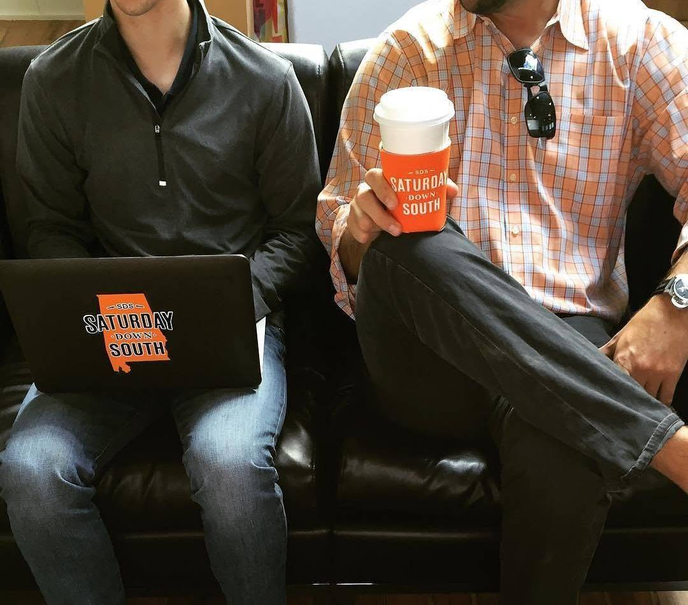
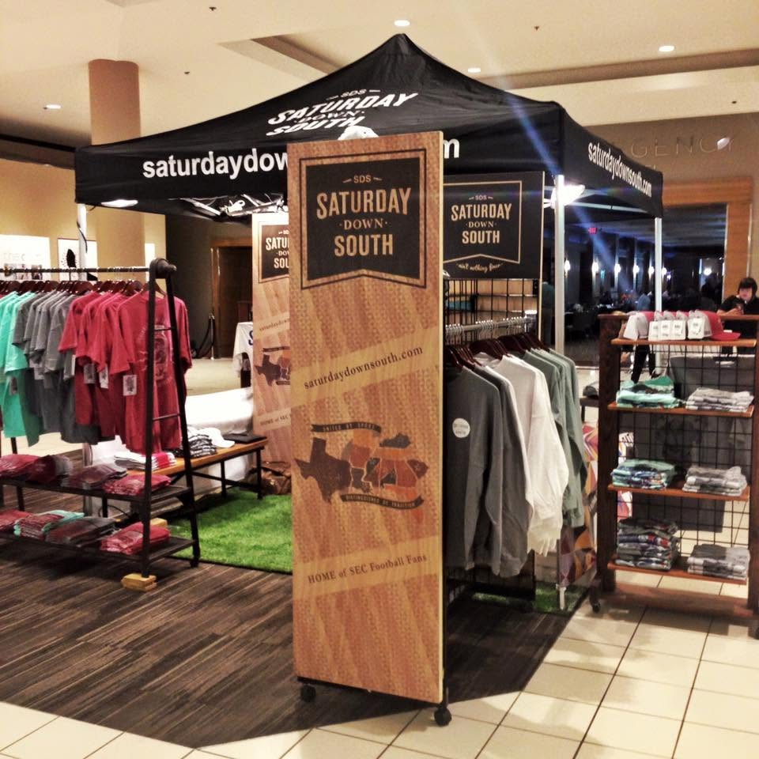
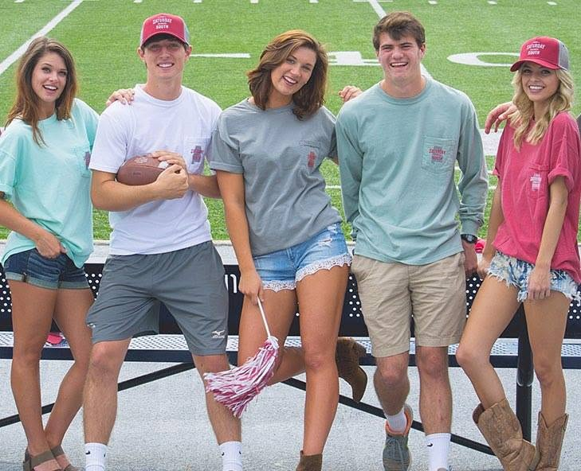
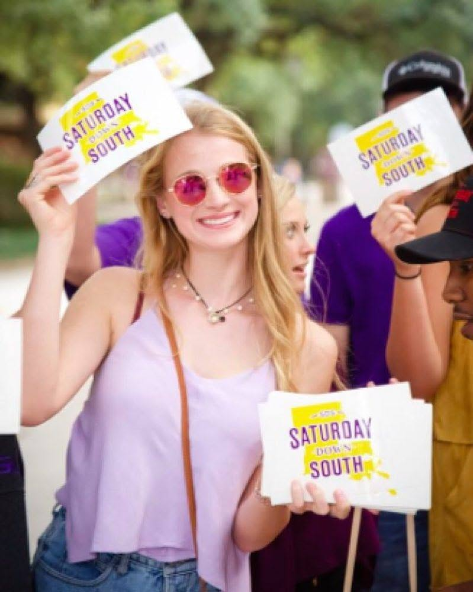
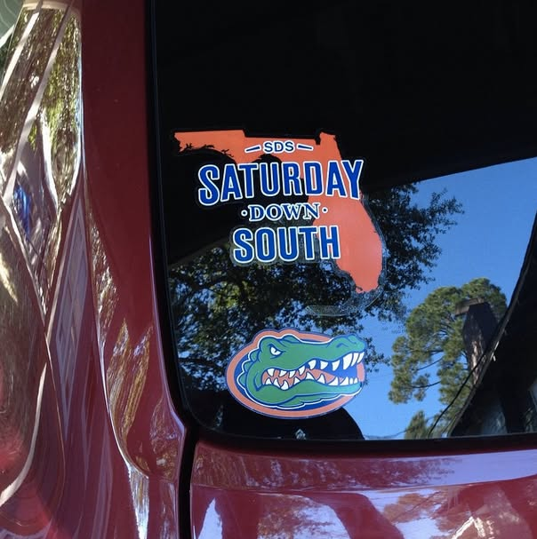
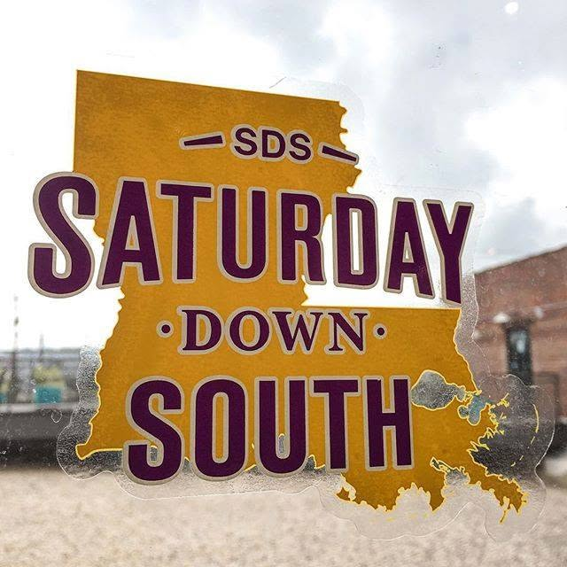
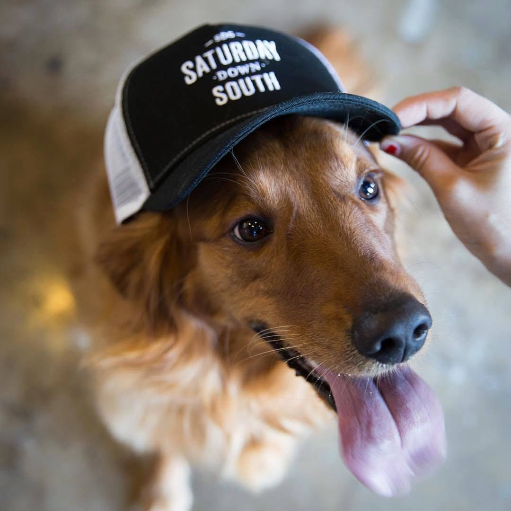

In the 2000s, the “independent” web was coming into its own. While the World Wide Web was initially dominated by massive portals and household brands such as Yahoo! and ESPN, a group of web-native publications was beginning to deliver something new to sports fans. ESPN’s Page 2 was offering a different style of writing—notably from Bill Simmons—compared to ESPN proper. Gawker’s Deadspin was pushing the limits of online sports journalism in more ways than one. Bleacher Report was in the early innings of becoming a powerhouse. And upstarts like The Big Lead were showing those of us paying attention how to build legitimate audiences online.
College football had an online presence, but it consisted mostly of large national publications like Yahoo! Sports or individual team communities, whether through the Rivals network or independent blogs and message boards. But college football is perhaps the most unique sport in America (at least it was). Highly regionalized, with distinct characteristics in everything from play on the field to the culture of college towns. A conference dynamic where fans root first for their team and second for their conference. A messy postseason. And the Southeastern Conference (SEC) seemed to represent the pinnacle of this unusual college football dynamic.
There was an obvious unmet need: an online community and brand that was unabashedly Southern college football. A publication that understood how people spent their Saturdays in the fall. Saturday Down South was born.
In the mid-2000s, it wasn’t uncommon to hear an “SEC” chant from the crowds at SEC football games. Conference pride was beginning to manifest itself. I tend to think Florida’s dominance over Ohio State in the 2007 BCS Championship Game really accelerated this, but that might be my Florida bias. Regardless, Saturday Down South was essentially the online manifestation of the “SEC” chant.
There was early evidence that the brand and concept resonated. Traffic showed promise. Our team felt like we had something. But could we turn it into an actual business? Could we scale the audience to the point where Saturday Down South became a major media brand in the sports landscape?

Distribution
We knew early on that the concept was a winner. We even had legitimate traffic for an upstart “blog.” But in its current form, it would likely remain a fun hobby project. Something we could be proud of, but not necessarily earn a living from, much less generate significant profits.
Through observing traffic sources and experimenting, we quickly learned that there were significant pools of traffic to be had from social media, namely Facebook. In the early 2010s, Facebook “pages” were still new, and their organic reach was significant (organic reach referring to followers seeing a page's posts in their news feeds).
We had minimal resources, but we invested every penny we could find into Facebook distribution. We built team fan pages on Facebook and shared every article we wrote on the website with the relevant pages. Traffic began to skyrocket.
Within a few years, we at Saturday Down South, a small team with no notable writers, were getting double and triple the web traffic of established brands with well-known writers. They had the journalistic pedigree, but we had the distribution. And in this era of the internet, distribution won, and it wasn’t close.
Why did Saturday Down South become nationally known? Why did it hit 60,000 concurrent users during the 2015 Oregon-FSU Championship Game? Why did it ultimately reach 10 million monthly unique users? Why did our writers become regulars on TV and radio shows across the Southeast (and around the nation)? Facebook traffic.
Oh, we did other things right, too. We eventually nailed SEO, built a brand intentionally to drive direct traffic, and, for a few years, had one of the best commenting communities of any sports site. But it was Facebook traffic that took SDS from a cool blog to an institution.
…
Entrepreneurship is about agitating to find a successful formula. We knew we had tapped into the right formula for Southern college football. We knew we had nailed the timing. But when we launched, we didn’t know about Facebook traffic.
We discovered organic traffic from Facebook before the vast majority of the media world did. And then we went all-in on it.
Toward the end of the 2010s, Facebook organic traffic had all but dried up, but it didn’t matter. We had already reached escape velocity.
A Window Into The 2010s Web
While social media was on the rise in the early 2010s, the website home page still mattered. Our team gave a lot of thought into how we might bring together the best that the site would offer: easy access to a news feed, the best writing available that day and easy navigation into a hub about your particular team. We thought a good bit about design, layout and the visual imagery that would be used.
The home page in many respects during the 2010s was still representative of a brand. You got a good glimpse of what a site was all about by its home page.
As of 2026, we’re increasingly moving to an era where the website home page is irrelevant. Oh, they still get consideration. But fewer and fewer people are using them as front doors to a world of content consumption. That’s being replaced by social feeds, by search results, and increasingly by AI chat interfaces and personal agents.
Depending on who you ask, the “hey day” of sports blogs and independent websites spans something like 2005 - 2015. By 2015, our team was frankly just getting started, but it’s not a terrible estimate. Saturday Down South had moved beyond a sports blog by this point. We had robust distribution that we controlled, we had dozens of writers, and we had a brand that had strength in the market.
A Window into 2010s College Football
The 2010s were an historic time in college football. The era represents both the transition toward a true postseason playoff format (2014) as well as the last years before the sport changed dramatically with NIL, transfer portals and endless playoff expansion.
Our team’s content was fueled by endless characters and breathtaking athletic performances. Cam Newton’s dominance. Johnny Manziel’s controversial rise. Tyrann Mathieu, Jadeveon Clowney, Derrick Henry, Joe Burrow, Patrick Peterson and more. Perhaps the biggest characters were the coaches. Steve Spurrier and Les Miles provided endless material. Will Muschamp, Gene Chizik, Dabo Swinney, Derek Dooley. Oh, man, Derek Dooley! And of course, the big daddy of them all, Nick Saban.
Nothing drove fans (and web traffic) like the moments on the field. No moment from this era rivals the Kick Six in November 2013. The three days following the Kick Six were the first, second and third biggest traffic days in the history of Saturday Down South up to that point.
There were the wild Manziel games, the Tua for Jalen swap at halftime Alabama vs. Georgia championship game. The “Game of the Century” featuring Alabama vs. LSU in 2011 truly felt like the game of the century. Yes, I know it ended in a 9-6 score.
The 2010s had it all, and Saturday Down South was along for the ride providing millions each season an experience that added to all the fun.
Brand Affinity
While our execution had ups and downs, one thing we nailed from the beginning was the brand. From the beginning, we wanted the home page, the content, the social media presence… all of it, to represent the brand. My common criticism of the media during this time was that it seemed like all the “professionals” covering college football really didn’t like college football. Saturday Down South loved college football.
We loved the lively tailgating. And the fandom that was passed down generation to generation across small towns. And the overly festive environment of every gameday, even when a team was 2-9. And the quirkyness and messiness that was college football. No it wasn’t the NFL, and that was the point.
We even paired the online empire with clothing brand. A sister company that licensed the brand developed a line of mostly shirts and hats that several hundred retail stores began carrying across the Southeast. The SDS hat could be seen around tailgates as well as on Danny Kanell’s head while broadcasting on ESPN with Ryen Russillo. And the decals. At one point in 2014, we shipped out 80,000 decals. Even recently I saw a faded decal on the back of a jeep driving down the highway.






06 / LEGACY
Reflections
The SDS ownership group sold the business in 2021. To take the business to another level and expand nationally, it was going to take resources and a restructured ownership. Now several years removed from this, there are many things to reflect on from the years of building a business and then eventually selling it to another entity.
What did we do right? The brand was a home run. Saturday Down South truly resonated. We were early to social media and capitalized. We also had outstanding execution in the world of page views. Our team was faster and scrappier in producing content at scale and at pace, beating out most outlets day-to-day. Free, organic traffic at scale with highly efficient content operations meant we were really flying there during these peak years of the “page view economy.”
We also had some success “punching above our weight class” in selling sponsorships. For a mid-tier sized publisher, selling direct deals isn’t easy, but Saturday Down South’s brand opened doors, especially for southeast regional plays. Southeast Toyota, RAM Trucks, Bud Light, Texas Pete Hot Sauce, Synovus Bank and others were brand partners of Saturday Down South.
Where did we miss? While the overall story and outcome of Saturday Down South is one of success, I would suggest that SDS never truly hit its full potential. With the brand and distribution we had in the early 2010s, SDS easily should have become as big of a brand as, say, Barstool Sports (minus the raunchiness). Internal mixups, projects that took our eye off the ball and maybe just overall immature leadership from our end (this was our first venture, after all) meant we likely never reached the true potential of the business.
We were late on SEO, missing out on lots of traffic in the mid and late 2010s. When something is working (social media traffic), you tend to hang on too long. And more importantly, we never pivoted quite well toward a multimedia operation as web editorial content began to fade from prominence. This is a difficult transition, and even some of the media companies that navigated this well have questionable economics.
But during its peak years, Saturday Down South was something special, and despite all the stress, long hours and difficulties, it was quite a ride. We had some phenomenal people involved, many going on to much bigger and better things with SDS as critical part of their career. It’s a common refrain in the business and technology world today that “you can just do things.” It resonates, because in many ways, with SDS, we just did things. A bunch of stuff didn’t work, but enough did. I am thankful.